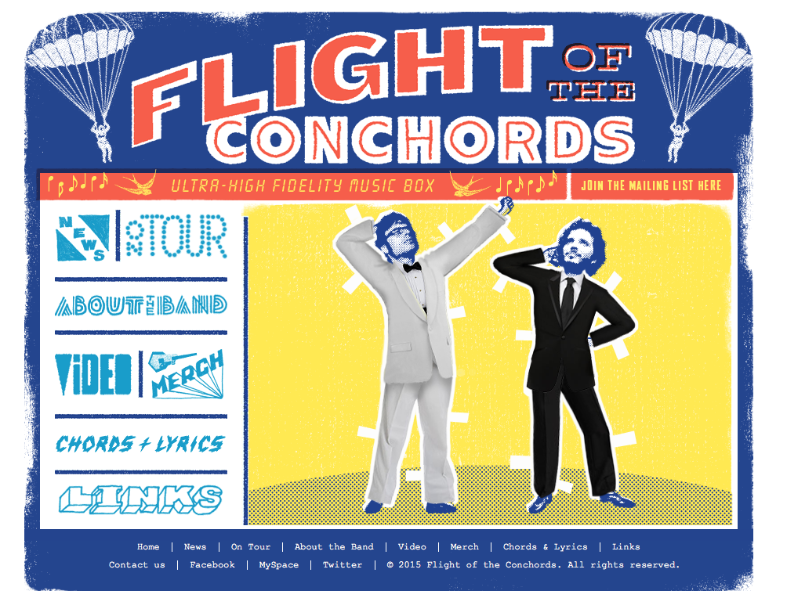

The second website I chose to write about is the website for the band Flight of The Conchords. I've enjoyed their music, comedy and TV show, for quite some time now, and I can say, speaking as a fan, their home page is pretty much what I would have imagined them making. It's colorful, and playful, and my favorite part is the interactive drag and drop you can do with their different costumes from various skits.
